Say hello to Breefox and Xandie, our two adorable Cavoodles who fill our days with love and laughter.
Xandie
Our beautiful chocolate-red girl, is full of energy and charm. She absolutely loves cuddles and never says no to a long walk or an outdoor adventure.
Breefox
Bree, as we like to call him — is a gentle blond boy with a calm and caring nature. He’s smart, affectionate, and always ready to brighten your day with his sweet personality.
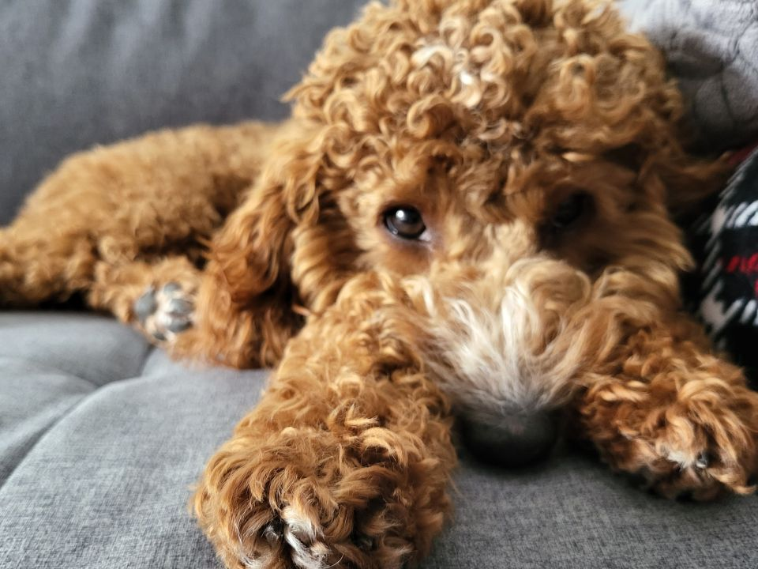
A picture of a dog named Xandie in Original copy no filter added.
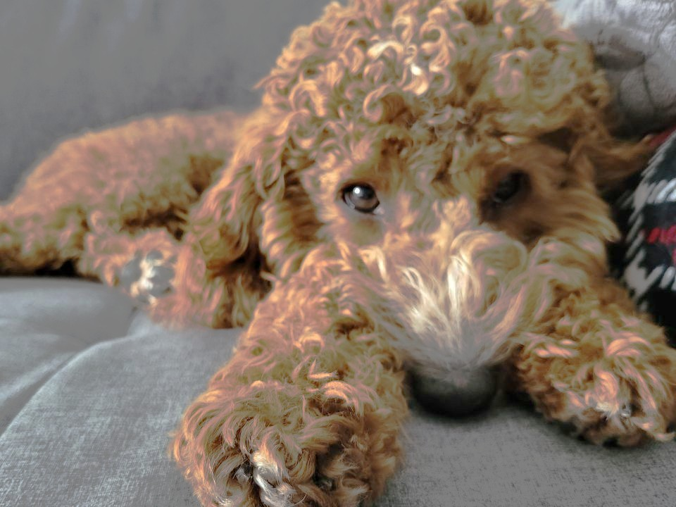
A picture of a dog named Xandie in negative 100 contrast contrast filter applied.
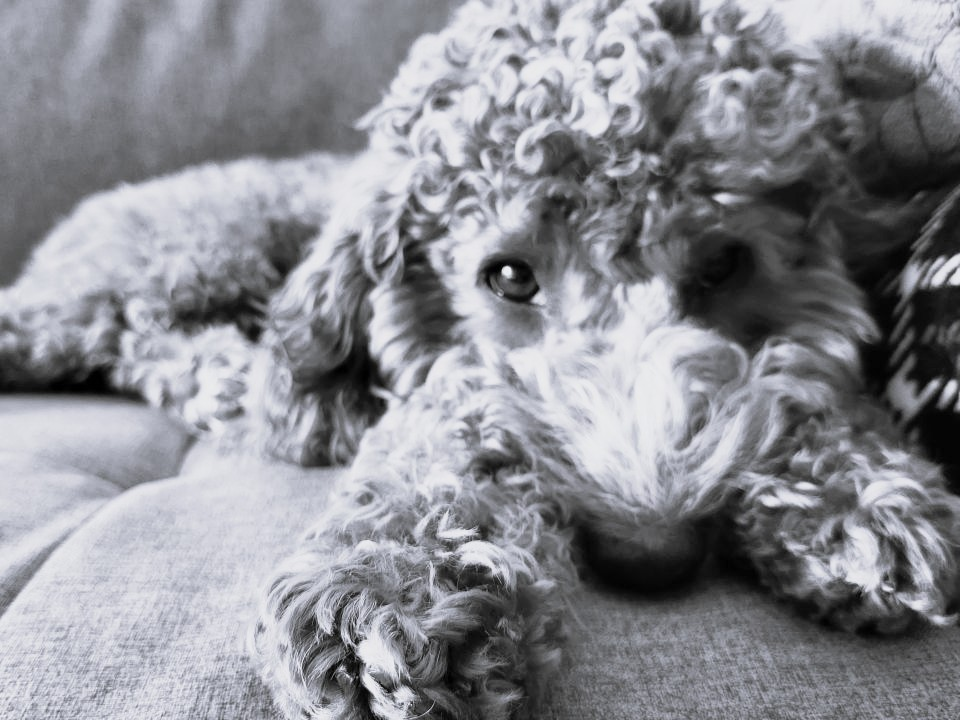
A picture of a dog named Xandie in black and white.
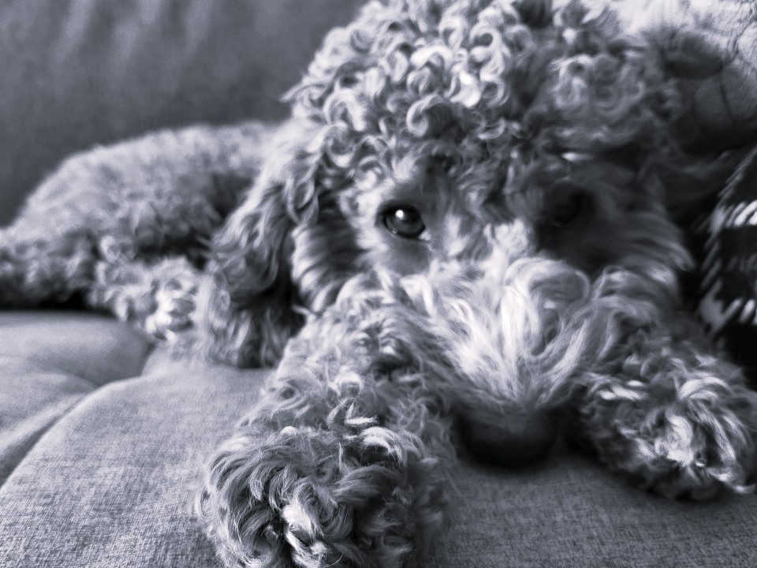
A picture of a dog named Xandie in cool black and white.A picture of two dogs sitting on a couch in Original copy no filter added.
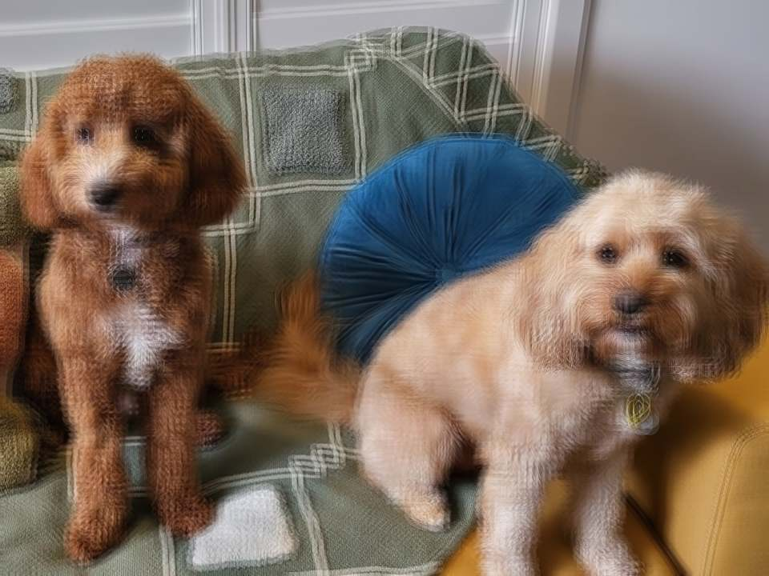
A picture of two dogs sitting on a couch with fragment filter added.
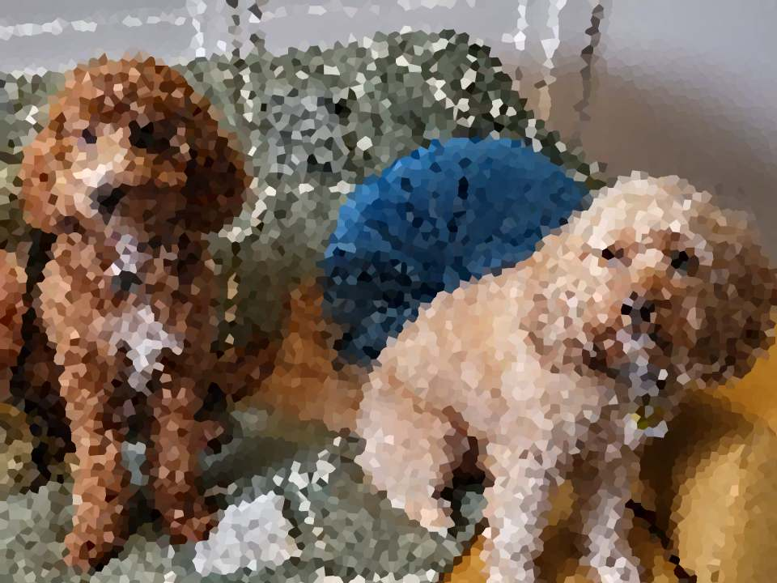
A picture of two dogs sitting on a couch with crystalize filter added.
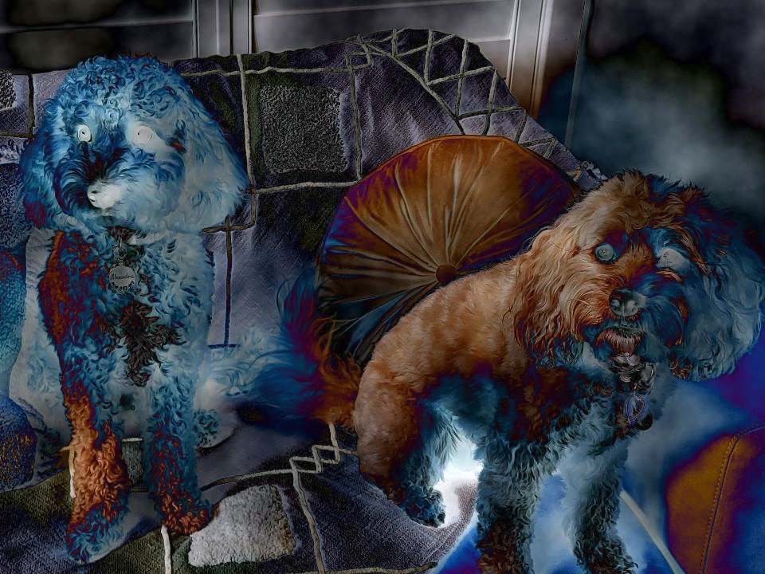
A picture of two dogs sitting on a couch with difference cloud filter added.
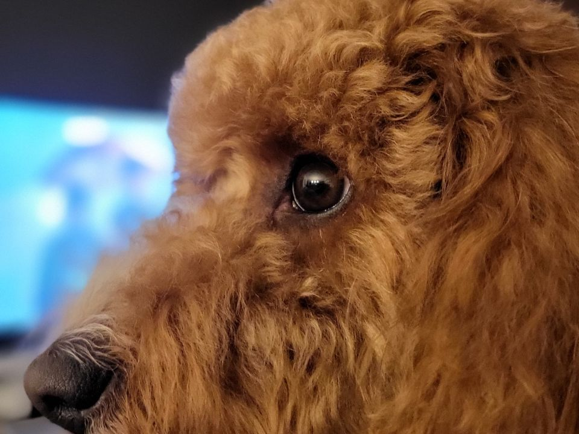
A close up photo of a dog left side view no filter added.
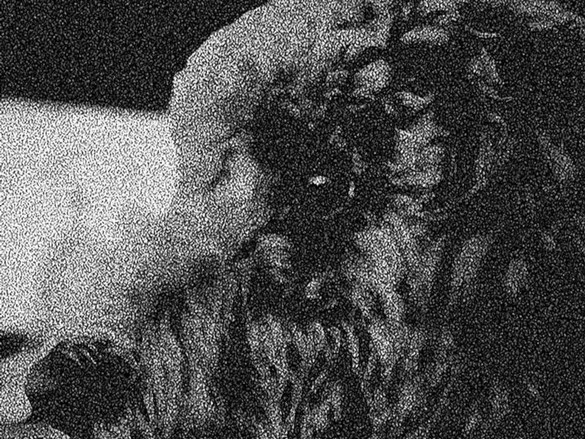
A close up photo of a dog left side view with reticulation filter added.
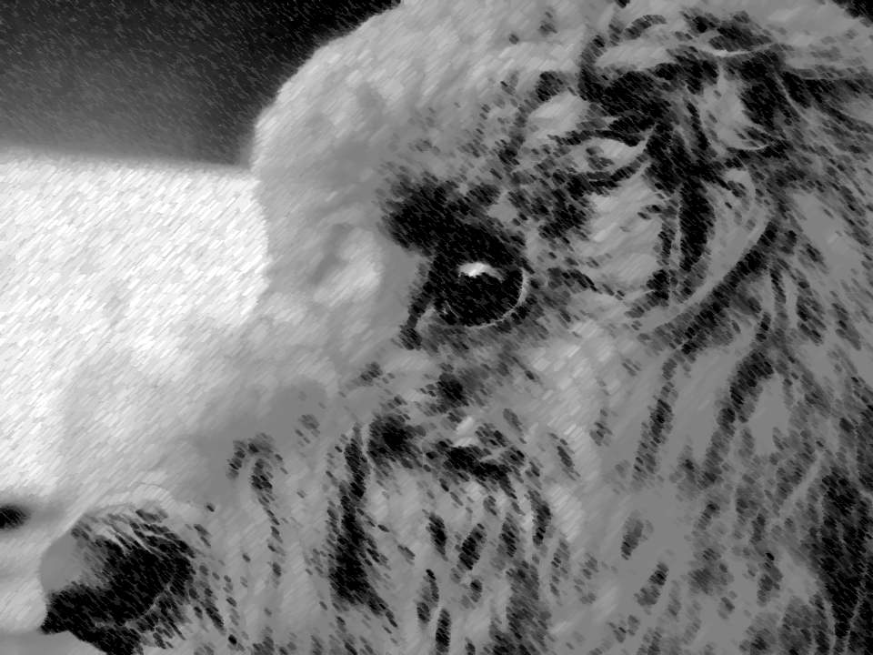
A close up photo of a dog left side view with chalk and charcoal filter added.
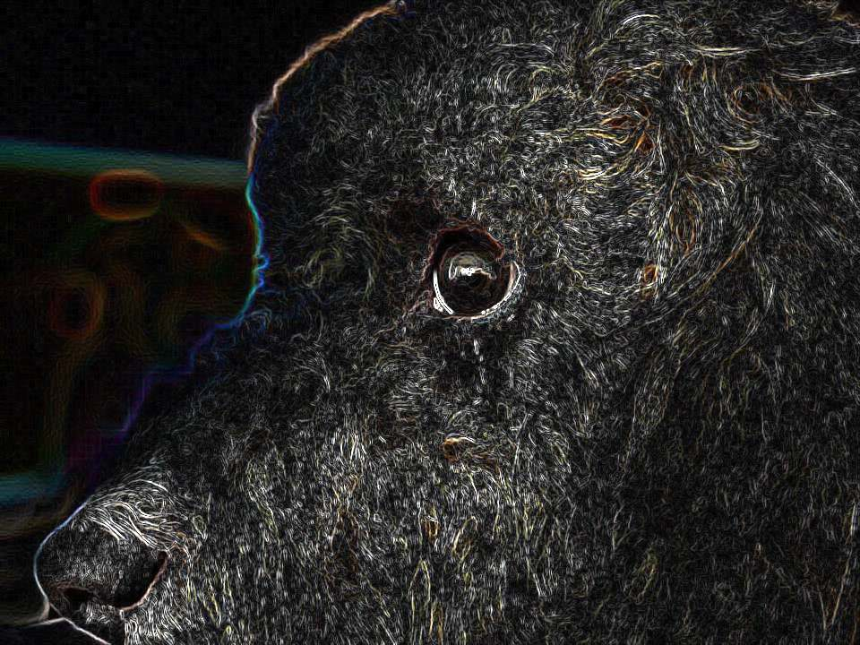
A close up photo of a dog left side view with glowing edges filter added.
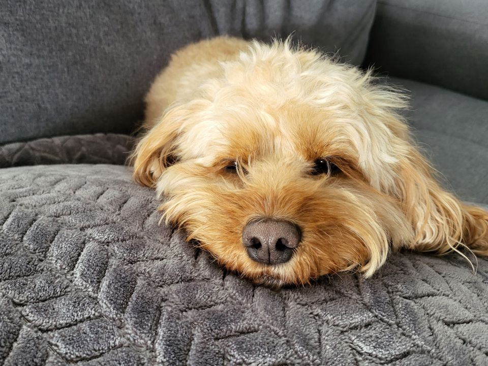
A close up photo of a dog leaning its head on a pillow no filter added.A close up photo of a dog leaning its head on a pillow with grain filter added.A close up photo of a dog leaning its head on a pillow with mosaic tiles filter added.A close up photo of a dog leaning its head on a pillow with patchwork filter added.
Both Breefox and Xandie are playful, intelligent, and full of life — the perfect mix of Cavalier King Charles Spaniel affection and Poodle smarts. They’re loyal companions who bring warmth and happiness to everyone they meet.